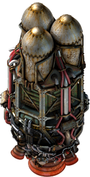
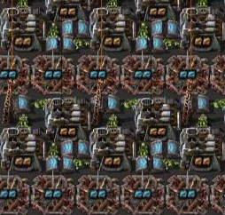

Fourth stage
The different parts
Mastering the Game:
As players enter the "Beat the Game" stage, they have evolved beyond the initial learning curve. They possess a comprehensive understanding of Factorio's mechanics, having successfully navigated through the complexities of resource management, production chains, and advanced technologies. This stage marks a transition from learning to mastery, where players apply their knowledge to achieve the ultimate goal: launching a rocket.
Launching Rockets:
The primary objective in the "Beat the Game" stage is launching a rocket into space. This task is not merely a mechanical action but a culmination of the player's strategic planning, resource management, and efficient production. Constructing the rocket silo, accumulating the necessary resources, and addressing potential bottlenecks in the process become key challenges. Successfully launching a rocket signifies a player's triumph over Factorio's intricate industrial landscape.
Pursuing Achievements:
Beyond launching rockets, players in the "Beat the Game" stage often set their sights on various achievements. These achievements range from ecological goals to optimizing production speed and efficiency. Each achievement presents a unique challenge, requiring players to adapt their strategies and refine their factories to meet specific criteria. Pursuing achievements adds layers of complexity and diversity to the gameplay experience.
Learning Ratios:
In this stage, players often delve into the realm of ratios – the precise balance between input and output for various production processes. Understanding the ideal ratios for assembling machines, refineries, and other structures becomes crucial for maximizing efficiency. Some players may choose to employ calculators or online tools to fine-tune their ratios, ensuring optimal resource utilization and production rates.
The Challenge of Spoilers:
Factorio's community is rich with information, and players might encounter spoilers or guides that provide insights into optimal strategies. However, in the "Beat the Game" stage, there's a delicate balance between self-discovery and leveraging external knowledge. Some players embrace the challenge of figuring out optimal ratios and designs independently, while others may seek guidance to streamline their progress.